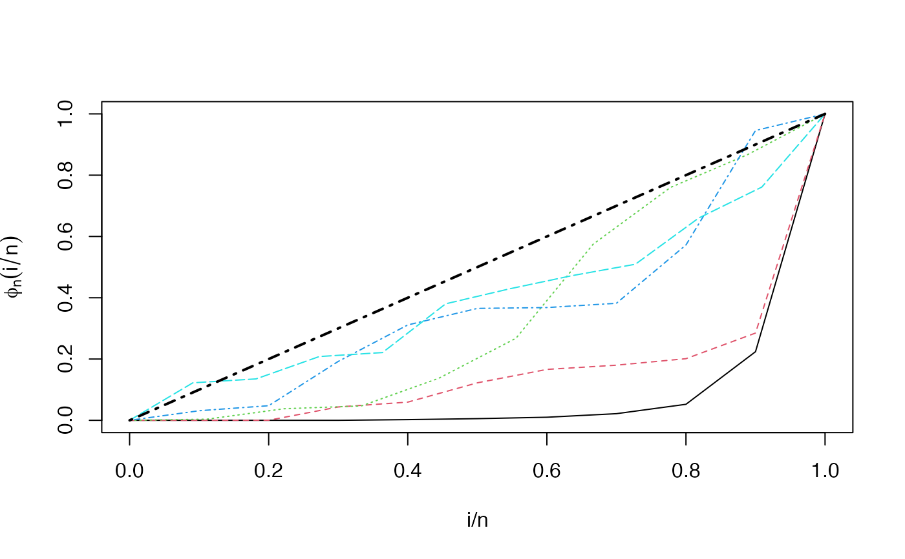

R/TTTE_Analytical.R
TTTE_Analytical.RdThis function allows to compute the TTT curve from a formula containing a factor type variable (classification variable).
TTTE_Analytical( formula, response = NULL, scaled = TRUE, data, method = c("Barlow", "censored"), partition_method = list(method = "K-fold", folds = 3), ... )
| formula | an object of class |
|---|---|
| response | an optional numeric vector with data of the response variable.
Using this argument is equivalent to define a formula with the
right side such as |
| scaled | logical. If |
| data | an optional data frame containing the variables (response and the
factor, if it is desired). If data is not specified, the variables
are taken from the environment from which |
| method | a character specifying the method of computation. There are two
options available: |
| partition_method | a list specifying cluster formation when the covariate in
|
| ... | further arguments passing to |
A list with class object Empirical.TTT containing a list with the
following information:
A matrix containing the empirical quantiles. This matrix has the number of columns equals to the number of levels of the factor considered (number of strata).
A matrix containing the values of empirical TTT. his matrix has the number of columns equals to the number of levels of the factor considered (number of strata).
A numeric named vector storing the number of observations per strata, and the name of each strata (names of the levels of the factor).
When method argument is set as 'Barlow', this function
uses the original expression of empirical TTT presented by
Barlow (1979)
and used by
Aarset (1987)
:
$$\phi_n\left( \frac{r}{n}\right) = \frac{\left( \sum_{i=1}^{r} T_{(i)} \right) + (n-r)T_{(r)}}{\sum_{i=1}^{n} T_i}$$
where \(T_{(r)}\) is the \(r^{th}\) order statistic, with
\(r=1,2,\dots, n\), and \(n\) is the sample size. On the other hand, the option
'censored' is an implementation based on integrals presented in
Westberg and Klefsj昼㸶 (1994)
, and using
survfit to compute the Kaplan-Meier estimator:
$$\phi_n\left( \frac{r}{n}\right) = \sum_{j=1}^{r} \left[ \prod_{i=1}^{j} \left( 1 - \frac{d_i}{n_i}\right) \right] \left(T_{(j)} - T_{(j-1)} \right)$$
Barlow RE (1979). “Geometry of the total time on test transform.” Naval Research Logistics Quarterly, 26(3), 393--402. ISSN 00281441, doi: 10.1002/nav.3800260303 , http://doi.wiley.com/10.1002/nav.3800260303.
Aarset MV (1987). “How to Identify a Bathtub Hazard Rate.” IEEE Transactions on Reliability, R-36(1), 106--108. ISSN 15581721, doi: 10.1109/TR.1987.5222310 , https://doi.org/10.1109/TR.1987.5222310.
Klefsj昼㸶 B (1991). “TTT-plotting - a tool for both theoretical and practical problems.” Journal of Statistical Planning and Inference, 29(1-2), 99--110. ISSN 03783758, doi: 10.1016/0378-3758(92)90125-C , https://linkinghub.elsevier.com/retrieve/pii/037837589290125C.
Westberg U, Klefsj昼㸶 B (1994). “TTT-plotting for censored data based on the piecewise exponential estimator.” International Journal of Reliability, Quality and Safety Engineering, 01(01), 1--13. ISSN 0218-5393, doi: 10.1142/S0218539394000027 , https://www.worldscientific.com/doi/abs/10.1142/S0218539394000027.
Jaime Mosquera Gutiérrez, jmosquerag@unal.edu.co
library(EstimationTools) #-------------------------------------------------------------------------------- # First example: Scaled empirical TTT from 'mgus1' data from 'survival' package. TTT_1 <- TTTE_Analytical(Surv(stop, event == 'pcm') ~1, method = 'cens', data = mgus1, subset=(start == 0)) head(TTT_1$`i/n`)#> [,1] #> [1,] 0.000000000 #> [2,] 0.004219409 #> [3,] 0.008438819 #> [4,] 0.012658228 #> [5,] 0.016877637 #> [6,] 0.021097046#> [,1] #> [1,] 0.0000000000 #> [2,] 0.0006028396 #> [3,] 0.0007033129 #> [4,] 0.0031146713 #> [5,] 0.0032151446 #> [6,] 0.0039184574#> SingleGroup #> 237#-------------------------------------------------------------------------------- # Second example: Scaled empirical TTT using a factor variable with 'aml' data # from 'survival' package. TTT_2 <- TTTE_Analytical(Surv(time, status) ~ x, method = "cens", data = aml) head(TTT_2$`i/n`)#> [,1] [,2] #> [1,] 0.0 0.0 #> [2,] 0.1 0.1 #> [3,] 0.2 0.2 #> [4,] 0.3 0.3 #> [5,] 0.4 0.4 #> [6,] 0.5 0.5#> [,1] [,2] #> [1,] 0.0000000 0.0000000 #> [2,] 0.1664586 0.2286585 #> [3,] 0.2330420 0.3384146 #> [4,] 0.3058677 0.4664634 #> [5,] 0.3682896 0.5945122 #> [6,] 0.4307116 0.7812500#> x=Maintained x=Nonmaintained #> 10 10#-------------------------------------------------------------------------------- # Third example: Non-scaled empirical TTT without a factor (arbitrarily simulated # data). y <- rweibull(n=20, shape=1, scale=pi) TTT_3 <- TTTE_Analytical(y ~ 1, scaled = FALSE) head(TTT_3$`i/n`)#> [,1] #> [1,] 0.00 #> [2,] 0.05 #> [3,] 0.10 #> [4,] 0.15 #> [5,] 0.20 #> [6,] 0.25#> [,1] #> [1,] 0.000000 #> [2,] 4.449457 #> [3,] 7.398548 #> [4,] 9.121747 #> [5,] 11.777099 #> [6,] 14.065017#> 1 #> 20#-------------------------------------------------------------------------------- # Fourth example: non-scaled empirical TTT without a factor (arbitrarily simulated # data) using the 'response' argument (this is equivalent to Third example). y <- rweibull(n=20, shape=1, scale=pi) TTT_4 <- TTTE_Analytical(response = y, scaled = FALSE) head(TTT_3$`i/n`)#> [,1] #> [1,] 0.00 #> [2,] 0.05 #> [3,] 0.10 #> [4,] 0.15 #> [5,] 0.20 #> [6,] 0.25#> [,1] #> [1,] 0.000000 #> [2,] 4.449457 #> [3,] 7.398548 #> [4,] 9.121747 #> [5,] 11.777099 #> [6,] 14.065017#> 1 #> 20#-------------------------------------------------------------------------------- # Fifth example: empirical TTT with a continuously variant term for the the shape # parameter in Odd Weibull distribution. qOW <- function(p, mu, sigma, nu, lower.tail=TRUE, log.p = FALSE){ if (any(mu<=0 )) stop(paste("mu must be positive", "\n", "")) if (any(sigma*nu<=0)) stop(paste("Product sigma*nu must be positive", "\n", "")) if (log.p == TRUE) p <- exp(p) else p <- p if (lower.tail == TRUE) p <- p else p <- 1 - p if (any(p < 0) | any(p > 1)) stop(paste("p must be between 0 and 1", "\n", "")) q <- (1/mu)*(log1p( (p*(1-p)^(-1))^(1/nu) ))^(1/sigma) return(q) } rOW <- function(n, mu, sigma, nu){ if(any(n<=0)) stop(paste("n must be positive","\n","")) if (any(mu<=0 )) stop(paste("mu must be positive", "\n", "")) if (any(sigma*nu<=0)) stop(paste("Product sigma*nu must be positive", "\n", "")) n <- ceiling(n) p <- runif(n) r <- qOW(p, mu, sigma, nu) return(r) } x <- runif(200, 0, 10) nu <- 0.1 + 0.1*x y <- rOW(n=200, mu=0.05, sigma=2, nu=nu) partitions <- list(method='Equispaced', folds=5) # 5 equispaced partitions TTT_5 <- TTTE_Analytical(y ~ x, partition_method = partitions) head(TTT_5$`i/n`)#> [,1] [,2] [,3] [,4] [,5] #> [1,] 0.000 0.000 0.00000000 0.000 0.00000000 #> [2,] 0.025 0.025 0.02564103 0.025 0.02439024 #> [3,] 0.050 0.050 0.05128205 0.050 0.04878049 #> [4,] 0.075 0.075 0.07692308 0.075 0.07317073 #> [5,] 0.100 0.100 0.10256410 0.100 0.09756098 #> [6,] 0.125 0.125 0.12820513 0.125 0.12195122#> [,1] [,2] [,3] [,4] [,5] #> [1,] 0.000000e+00 0.0000000000 0.00000000 0.00000000 0.00000000 #> [2,] 3.690889e-05 0.0005657495 0.01203075 0.07259629 0.05227271 #> [3,] 9.525754e-05 0.0160637158 0.01370637 0.13088981 0.19357062 #> [4,] 1.003481e-04 0.0707636882 0.03036254 0.25196960 0.20564219 #> [5,] 1.119086e-04 0.1331264613 0.05211429 0.27416649 0.22195150 #> [6,] 1.700545e-04 0.1421793374 0.07883519 0.27958959 0.29615905#> [0.06 - 2.21) [2.21 - 4.31) [4.31 - 6.21) [6.21 - 7.86) [7.86 - 9.97] #> 40 40 39 40 41#--------------------------------------------------------------------------------